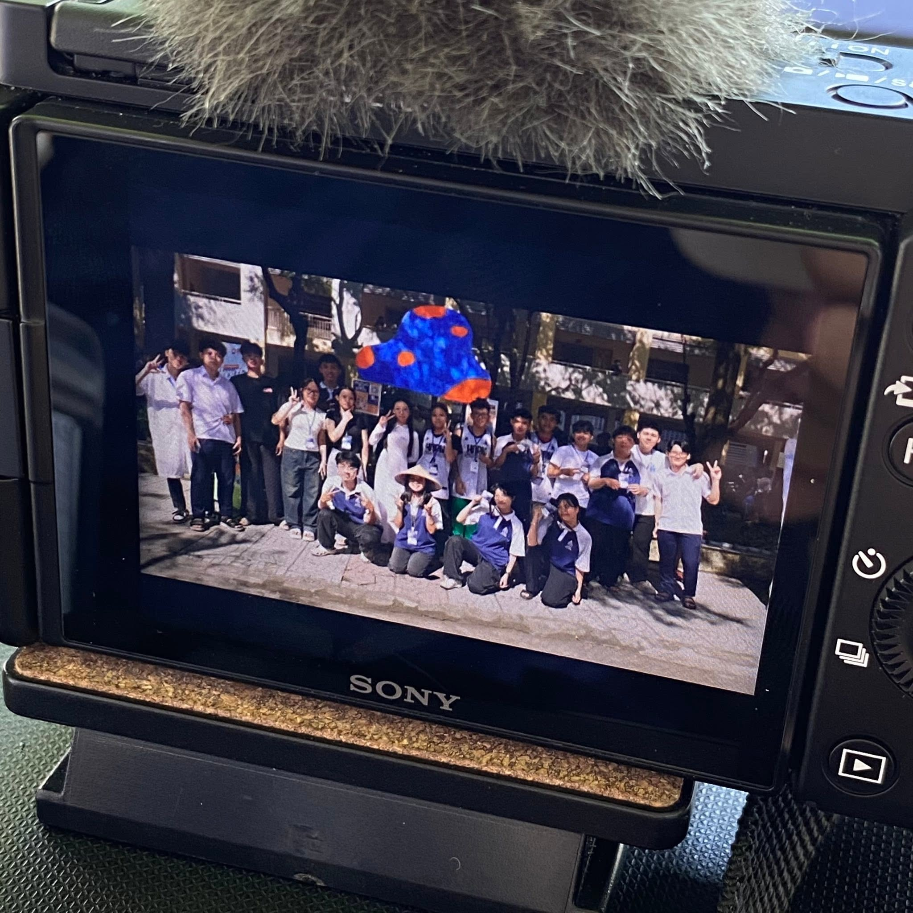
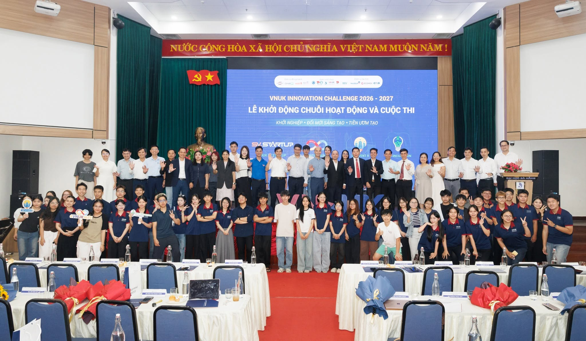
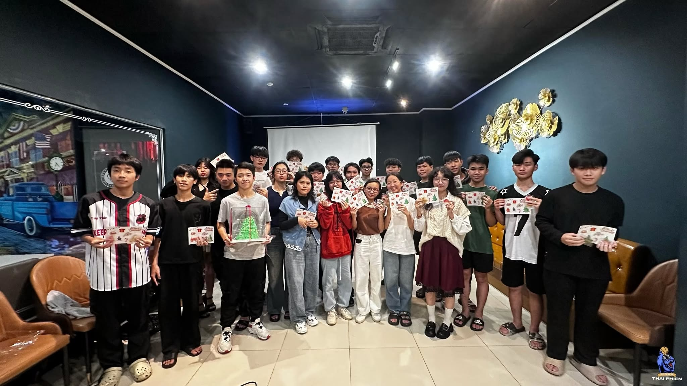
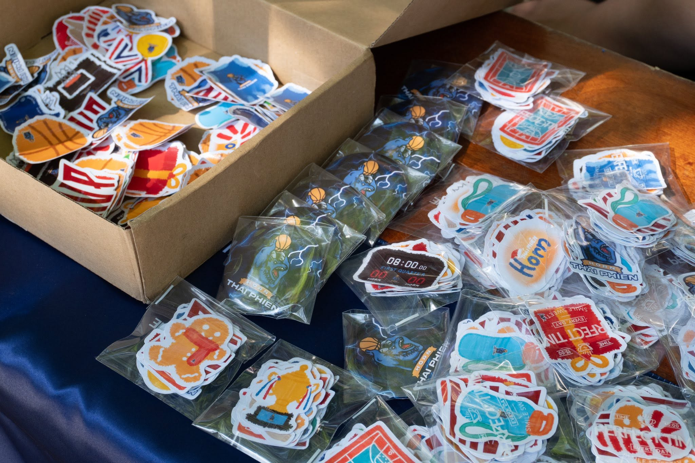
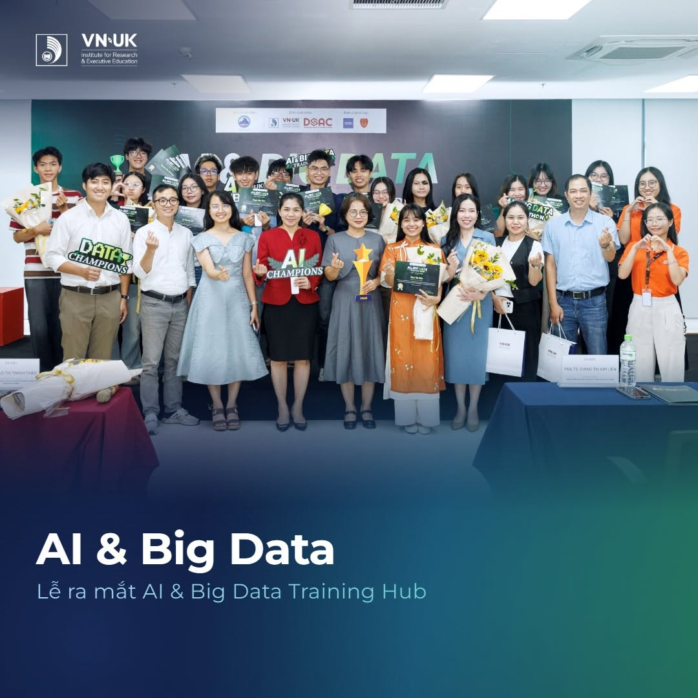

Leadership
Artifact #01
VNUK Club Fair Outreach
Coordinating public engagement and student booth logistics during orientation.
Computer Science & Applied Data Science · University of Danang

Academic profile, major focus, and direct contact details.
Computer Science · Applied Data Science
Undergraduate student at the VN-UK Institute for Research and Executive Education (VNUK), The University of Danang. Passionate about machine learning pipelines, empirical data modeling, and developing robust software systems that solve practical operational bottlenecks.
Baseline competency assessment and growth priorities.
Diagnostic assessment calibrated through peer appraisals, coursework delivery, and campus coordination roles:
Evidence-based reasoning in student innovation.

During the student innovation initiative, our technical team initially assumed mandatory mobile app registrations would streamline entry. Field testing revealed a 40% user drop-off due to network latency and installation friction.
Assumed all participants favored mobile app workflows over manual desks.
Trial data showed Wi-Fi choke points and participant resistance.
Consulted non-technical freshmen who prioritized immediacy over novelty.
Adopted lightweight offline browser QR passes with physical support.
Always stress-test engineering assumptions against end-user accessibility.
Core principles and ethical decision-making.
Accurate representation of research data and giving full credit to peer collaborators.
Accepting direct responsibility for project deliverables without shifting blame.
Creating structured discussion formats so less vocal members contribute safely.
Consistent technical follow-through and adherence to code quality standards.
Context: When a core teammate experienced a family emergency 48 hours prior to our coursework submission, our group rejected fabricating missing citations. Instead, we redistributed the workload internally while submitting a transparent explanatory memorandum to our faculty supervisor.
Takeaway: Professional integrity means rejecting false choices between expediency and harshness in favor of compassionate accountability.
Physical vitality, cognitive boundaries, and community support.

Regular 3x3 basketball practice provides high-intensity cardiovascular conditioning and resets cognitive focus after long coding sessions.

Participating in campus milestones like the Christmas gathering strengthens peer support and prevents isolation during high-stress periods.
Weekly time allocation and SMART capstone plan.
Targeting specialization in Data Science & Applied Machine Learning. Grounded by insights from events like the AI & Big Data Symposium, focusing on production-grade analytical pipelines.
Build an end-to-end data pipeline evaluating campus event metrics.
Maintain >85% model accuracy and complete 2 verified Git repositories.
Backed by 6 weekly protected coding hours reclaimed from screen audit.
Directly supports junior data engineering internship applications.
Final milestone deployment target: June 30, 2025.
Personal SWOT matrix and collaborative leadership.
Coordinated 12 volunteers by designing paired shift rotations (booth anchors + roaming ambassadors) and scheduled 10-minute rest intervals. Achieved peak student engagement with zero volunteer burnout.
View Volunteer Squad Artifact →Signature brand statement and professional conduct standards.
“I strive to be known as an analytical problem solver who marries computational rigor with active empathy — dependable, clear in communication, and focused on delivering lasting value.”
Proactive milestone dispatches and signaling hurdles 48 hours prior to deadlines.
Treating code reviews and faculty critiques as high-value diagnostic growth data.
Translating algorithmic constraints into clear, actionable requirements for peers.
Baseline comparison and future priorities.
| Vector | At The Beginning | Now |
|---|---|---|
| Mindset | Equated worth with effortless individual results; hesitated to ask for help. | Growth mindset; embraces constructive failure as diagnostic feedback. |
| Critical Thinking | Relied on intuitive assumptions and technological novelty. | Empirically tests premises against real-world user friction. |
| Well-Being | Viewed rest as guilty inactivity; suffered sleep fragmentation. | Protects athletic conditioning and 7-hour restorative sleep habits. |
| Future Plan | Vague interest in technology without structured milestones. | Targeted SMART roadmap in Applied Data Science for 2025. |
My next focus is stepping assertively into technical discussions — advocating for evidence-backed solutions even when in polite disagreement with group consensus.
Documented field engagements backing all portfolio claims.
Coordinating public engagement and student booth logistics during orientation.

LeadershipOrganizing paired volunteer shifts and structured rest breaks for sustained team morale.
Defending data models and navigating jury cross-examinations with empirical testing.

AcademicExtracting applied pipeline patterns from industry case studies to inform project scope.
Well-Being
Sustaining stamina and physical decompression through scheduled athletic competition.
Strengthening peer connection and emotional belonging through community traditions.